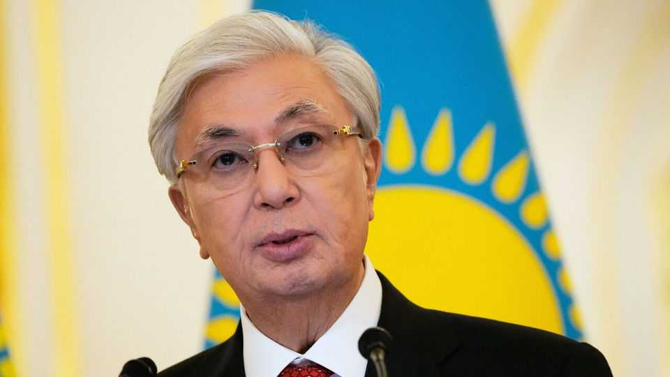

Kazakhstan prepares to vote in a cosmetic election
Despite promises of renewal, it is still an authoritarian state

Aug 20th 2026
“Vote for renewal,” urge giant billboards as Kazakhstan heads into a parliamentary election on August 23rd. Kassym-Jomart Tokayev, the president, calls this a turning point in the building of a “new Kazakhstan”—shorthand for a political reset that began after civil unrest demanding political change had left at least 238 people dead in 2022.
At first glance, much about this election is indeed new. Taking place under a new constitution, it will deliver a parliament with a new structure and a new name, certain to be dominated by a new party. This, ostensibly, is the reforming “new Kazakhstan” in action. But scratch the surface and the political trappings of the old Kazakhstan—associated with Nursultan Nazarbayev, Mr Tokayev’s long-serving predecessor and discredited political patron—emerge. The newly formed Justice party that is set to win a big parliamentary majority is in fact a revamped version of the old ruling party that dominated for decades. And parliament will still be a rubber-stamp affair, because no genuine opposition parties are being allowed to run.
Pluralism is thriving in Kazakhstan, so Mr Tokayev said recently—only days after Amangeldy Dzhakhin, an opposition leader, had been jailed for seven years on spurious charges of extremism. His predecessor suffered the same fate, and it is not just politicians who are targeted. Reporters and social-media personalities have also been variously imprisoned, slapped with travel bans and barred from doing journalism on flimsy-looking charges. In a blatantly political case, a satirical post poking fun at the president recently landed a YouTuber behind bars.
This election follows the adoption of a new constitution, which Mr Tokayev has depicted as Kazakhstan “casting off the super-presidential form of rule”. That was a reference to his predecessor, who monopolised power for three decades before resigning in 2019. Mr Nazarbayev’s designated successor was Mr Tokayev. The pair ruled in tandem until the 2022 unrest, which left Mr Nazarbayev sidelined and Mr Tokayev scrambling to dissociate himself from his former mentor. He rolled back some presidential powers in 2022, but clawed some back again in the new constitution, adopted by referendum against a backdrop of arrests of critics.
One important reform remains in force. In 2022 Mr Tokayev introduced a single presidential term-limit. He has pledged to abide by this, but the constitution offers him a loophole. He has the right to a new “first” term, the Constitutional Court recently ruled, so he could run again—a tried-and-tested tactic to cling to power loved by Central Asian autocrats as well as by Vladimir Putin in Russia and Recep Tayyip Erdogan in Turkey. The end of his current (second) term in 2029 will thus become a litmus test of Mr Tokayev’s professed commitment to ridding Kazakhstan of monarchical rule. ■
For exclusive coverage of Asian politics, economics and security, sign up to Asia Bulletin, our weekly subscriber-only newsletter.